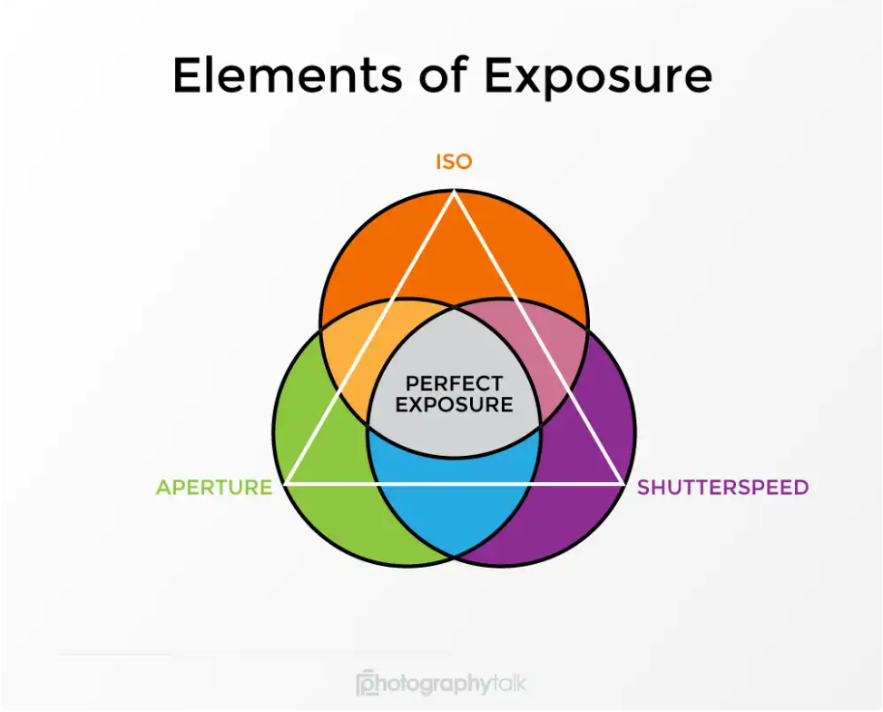
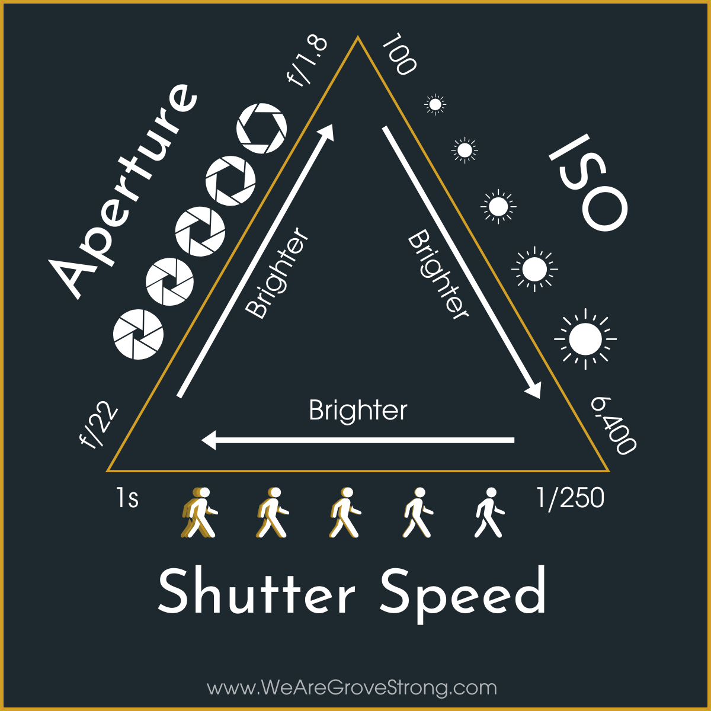

Exposure Triangle
The core concept of controlling exposure by adjusting the balance between aperture, shutter speed, and ISO.

The core concept of controlling exposure by adjusting the balance between aperture, shutter speed, and ISO.
The aperture controls the amount of light entering the lens. The aperture is controlled by a diaphragm in the lens that adjusts its width based on the f-stop being used. The higher the f-number, the smaller the aperture opening, and the less light coming into the lens. Conversely, the lower the f-number, the larger the aperture opening, and the more light coming into the lens.
Shutter speed controls the duration of light that reaches the lens. It’s controlled by a curtain in front of the camera’s sensor. A fast shutter speed means that the curtain opens and closes quickly, thus minimizing how long the sensor is exposed to light. Conversely, a slow shutter means the curtain opens and closes more slowly, allowing a greater duration of light to hit the sensor.
ISO is responsible for the sensitivity of the camera’s sensor to light. The higher the ISO, the more sensitive the sensor becomes, and the lower the ISO, the less sensitive it becomes.